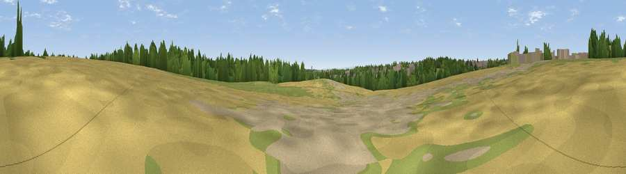

Viewpoint near Scholes
#43385 in England · top 90% of its area beats it · near ScholesWhere it is
The exact computed spot (SE 37076 37000). Click the marker for map links.
The view, rendered

A 360° render of this exact spot computed from the terrain model, tree cover and land cover — summer colours, afternoon light, calibrated against photographs of famous viewpoints. Real trees, hedges and buildings will differ in detail.
The panorama
Grey silhouette: terrain skyline in each direction (720 bearings, Earth curvature and refraction included). Dashed green: skyline with trees (+15 m) and buildings (+8 m) as obstacles. Blue strip: how far the ground is visible on each bearing.
Where the view opens
Wedge length = distance to the farthest visible ground on that bearing (vegetation-aware). Rings at 10, 25 and 50 km.
What fills the view
30% grassland · 28% built-up · 22% cropland · 12% woodland · 8% bare ground
Angular shares of the visible panorama (visual magnitude), not map area. Landscape diversity 0.66 (0–1 Shannon).
Key numbers
More beautiful places nearby
The staircase of upgrades: each row has a higher view potential than everything closer. Driving times are estimates from straight-line distance, calibrated against real road routing — check an actual route before setting out.
| Place | Direction | Drive | Score |
|---|---|---|---|
| Viewpoint near Scholes | WSW · 2 km | ~4 min | 33.7 |
| Viewpoint near Shadwell | NNW · 3 km | ~7 min | 53.8 |
| Viewpoint near Kippax | SE · 7 km | ~14 min | 57.9 |
| Viewpoint near Micklefield | SE · 8 km | ~17 min | 65.7 |
| Rawdon Trig point | W · 15 km | ~27 min | 69.6 |
| Rawdon Billing | W · 16 km | ~28 min | 73.0 |
| Viewpoint near Otley | WNW · 18 km | ~32 min | 77.5 |
| Hood Hill | NNE · 46 km | ~67 min | 79.6 |
53.82795, -1.43820 · source: osm viewpoint · position refined by local search. Computed location — check access rights before visiting.